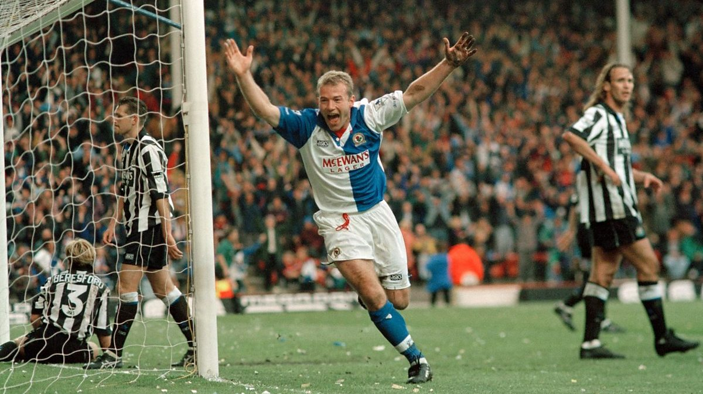

<!DOCTYPE html>
<html lang="pl-PL>
<head>

<meta http-equiv="Content-type" content="text/html; charset=UTF-8" />
<meta http-equiv="Content-Language" content="pl" />
<meta name="Author" content="Aleksander Żuk" />
<title>Piłka nożna okiem amatora</title>

<style>

#menu {
background-color:black;
color: white;
padding: 10px;
font-size: 200%;
}
#menu table{
width:100%;
}
#menu th{
padding: 15px;
background-color:darkred;
}
#menu a {
text-decoration: none;
color:white;
}


h1 { 
color: black;

font-size: 400%;
text-align:center;
padding-top: 20px;
}

h2{
color: black;
text-align:center;
font-size:200%;
}

.center {
  display:block;
  margin-left: auto;
  margin-right: auto;
}
p{
font-size:200%;

margin:auto;
}
</style>

</head>

<body style="background-color:lightgray;">

<div id = menu>
<table>
<tr>
<th> <a href ="gotowa strona lab1.html"> Menu </th>
<th> <a href ="Na2Nozke.html"> Na2Nóżkę </th>
<th> <a href ="PremierLeague.html"> Premier League </th>
<th> <a href ="MlodePerelki.html"> Mlode Perelki </th>
<th> <a href ="oMnie.html"> O mnie </th>
<th> <a href ="kontakt.html"> Kontakt </th>
</tr>
</table>
</div>


<h1> <i> Piłka nożna okiem <b> amatora </b> </i> </h1>
<h2> Ciekawostki i opinie o świecie futbolu </h2>




</body>
</html>
